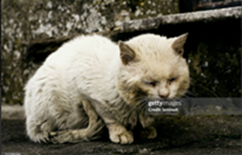

Causas
Se origina principalmente por la falta de educación y empatía (desconocimiento de las necesidades de los animales y adopciones o compras impulsivas sin responsabilidad), por prácticas culturales normalizadas como peleas de gallos, corridas de toros, circos y rodeos que priorizan el entretenimiento humano, y por la explotación económica en granjas industriales, criaderos y turismo animal, donde se anteponen las ganancias al bienestar, generando hacinamiento y condiciones insalubres.